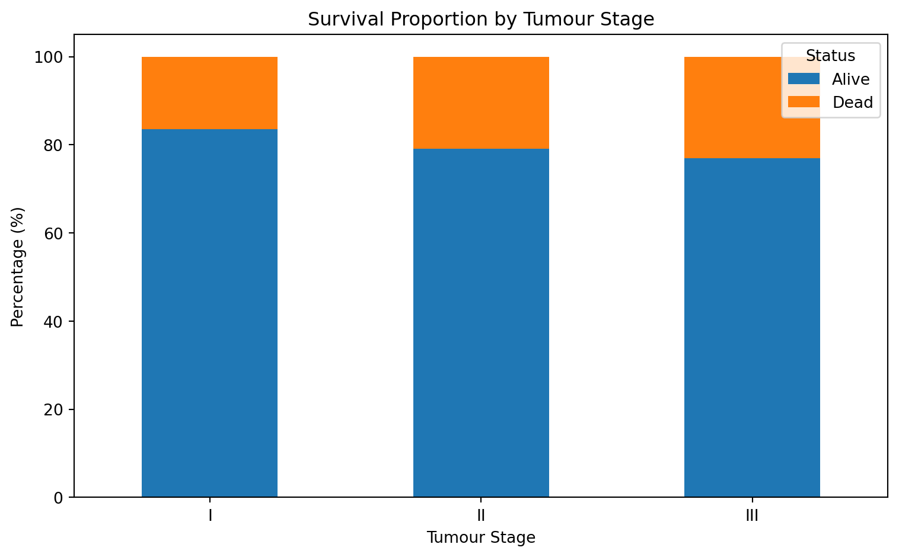
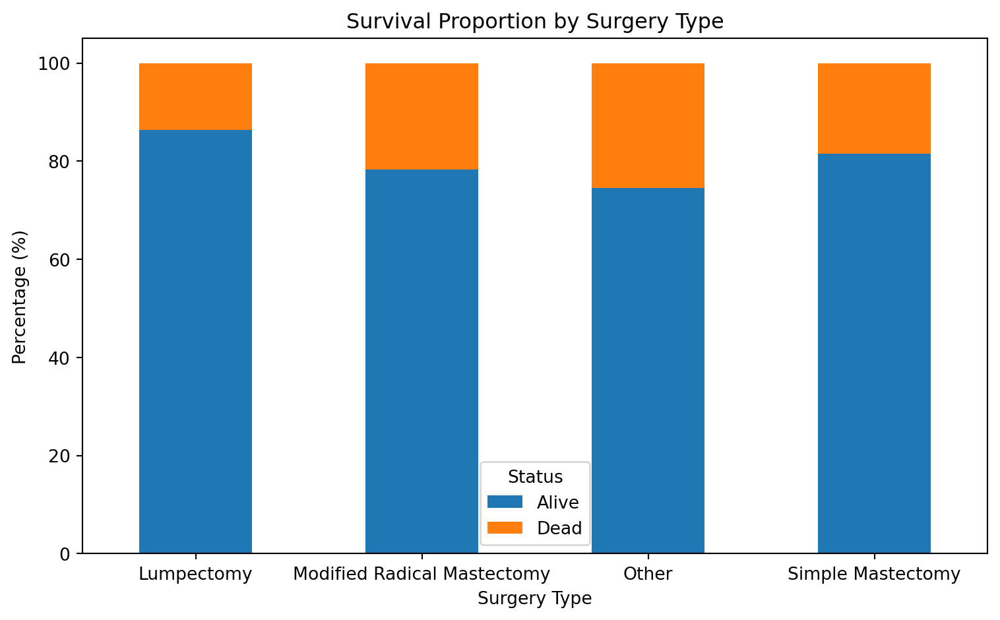
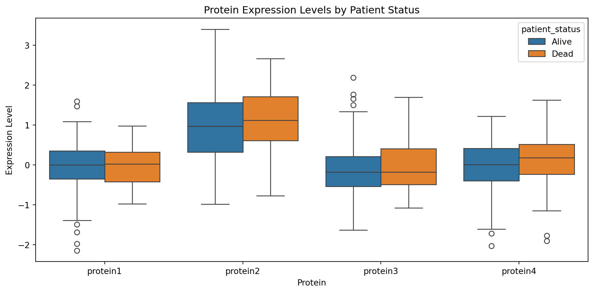
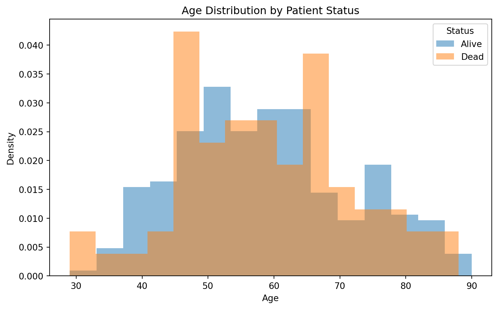
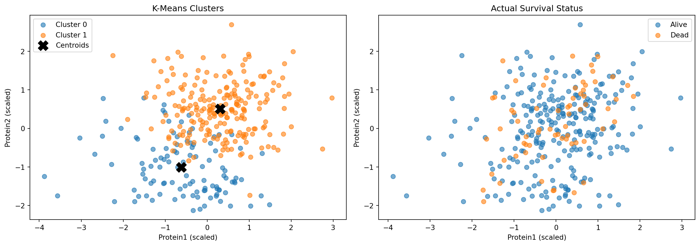

This report analyses a breast cancer dataset from The Cancer Genome Atlas (TCGA). The data contains clinical information and protein expression levels for 334 patients (321 after cleaning).
Research question: Which clinical and biomarker factors are associated with patient survival (Alive vs Dead) in breast cancer patients?
Sub-questions:
How does tumour stage relate to survival rate?
Do protein expression levels differ between survivors and non-survivors?
The only remaining missing values are in date_of_last_visit. We kept these as NaN because imputing dates would be misleading – these patients simply lack follow-up data.
The group means are very similar: mean age is ~59 for both groups and protein levels differ only in the second decimal place. None of these numeric variables alone will strongly separate the two groups.
4.2 Survival by Tumour Stage
Code
visualize_survival_by(brca, "tumour_stage")

Figure 1
There is a mild upward trend in death rate with increasing tumour stage. However, the differences are modest and the small sample sizes per stage limit what we can conclude.
4.3 Survival by Surgery Type
Code
visualize_survival_by(brca, "surgery_type")

Figure 2
Surgery types show some variation in death proportions, but this does not imply causation – patients receiving different surgeries likely differ in tumour severity.
4.4 Protein Expression Levels by Survival
Code
visualize_proteins(brca)

Figure 3
The boxplots show substantial overlap between Alive and Dead patients across all four proteins, indicating no strong differentiation.
4.5 Age Distribution by Survival
Code
visualize_age(brca)

Figure 4
The age distributions are nearly identical for both groups. Age does not appear to be a distinguishing factor for survival.
5. Feature Engineering
For K-Means clustering we prepare and scale our numeric features so that no single variable dominates the distance calculation.
Features used: age, protein1–protein4.
Scaling:StandardScaler centres each feature at mean 0 and scales to unit variance (important because age ~29–90 vs proteins ~-2 to 3).
Categorical variables are excluded because K-Means uses Euclidean distance.
Code
from sklearn.preprocessing import StandardScalerimport matplotlib.pyplot as pltimport seaborn as snsfeature_cols = ["age", "protein1", "protein2", "protein3", "protein4"]brca_cluster = brca[feature_cols].dropna().copy()scaler = StandardScaler()scaled_values = scaler.fit_transform(brca_cluster)brca_scaled = pd.DataFrame(scaled_values, columns=feature_cols, index=brca_cluster.index)print(f"Prepared {len(brca_scaled)} patients with {len(feature_cols)} scaled features")print(f"\nScaled feature summary (should be ~mean 0, std 1):")print(brca_scaled.describe().loc[["mean", "std"]].round(2))
Prepared 321 patients with 5 scaled features
Scaled feature summary (should be ~mean 0, std 1):
age protein1 protein2 protein3 protein4
mean 0.0 -0.0 0.0 0.0 -0.0
std 1.0 1.0 1.0 1.0 1.0
This section is secondary to the EDA above. We use K-Means to explore whether patients naturally group into distinct profiles based on protein expression and age. K-Means is unsupervised – it finds groups without knowing survival labels.
We plot protein1 vs protein2, colouring by cluster (left) and actual survival status (right).
Code
fig, axes = plt.subplots(1, 2, figsize=(14, 5))for ax, col, title in [ (axes[0], "cluster", "K-Means Clusters"), (axes[1], "patient_status", "Actual Survival Status"),]:for val insorted(brca_scaled[col].unique()): mask = brca_scaled[col] == val label =f"Cluster {val}"if col =="cluster"else val ax.scatter( brca_scaled.loc[mask, "protein1"], brca_scaled.loc[mask, "protein2"], label=label, alpha=0.6, s=40, ) ax.set_xlabel("Protein1 (scaled)") ax.set_ylabel("Protein2 (scaled)") ax.set_title(title) ax.legend()centroids = kmeans_model.cluster_centers_axes[0].scatter( centroids[:, 1], centroids[:, 2], marker="X", s=200, c="black", label="Centroids",)axes[0].legend()plt.tight_layout()plt.show()

Figure 5
Comparing the two panels reveals that the clusters do not align with actual survival status.
6.3 Cluster vs Survival – Cross-Tabulation
Code
crosstab = pd.crosstab( brca_scaled["cluster"], brca_scaled["patient_status"], margins=True,)print("Cluster vs Actual Survival Status:")print(crosstab)print("\nDeath rate per cluster (row %):")print((pd.crosstab(brca_scaled["cluster"], brca_scaled["patient_status"], normalize="index") *100).round(1))
Cluster vs Actual Survival Status:
patient_status Alive Dead All
cluster
0 87 20 107
1 168 46 214
All 255 66 321
Death rate per cluster (row %):
patient_status Alive Dead
cluster
0 81.3 18.7
1 78.5 21.5
Death rates are nearly identical across both clusters (~20%), confirming the clusters do not separate survivors from non-survivors. K-Means grouped patients by protein expression patterns – but those patterns are unrelated to survival, suggesting it depends on factors beyond these numeric variables.
7. Limitations
Small sample size (321 patients) limits statistical power.
Observational data – no causal claims possible.
K-Means assumes spherical clusters which may not reflect the true structure.
Choice of k=2 – the optimal number of clusters may differ.
Only numeric features – categorical variables were excluded from clustering.
8. Conclusion
Tumour stage: Mild upward trend in death rate from Stage I to III, but differences are modest. Weak association with survival.
Protein expression: Similar levels between Alive and Dead patients. Boxplots showed substantial overlap – no strong association.
Surgery type: Some variation in death proportions, but likely reflects differences in patient severity rather than a causal effect.
K-Means clustering confirmed these findings: unsupervised grouping did not separate survivors from non-survivors, reinforcing that survival depends on factors beyond the numeric variables in this dataset.